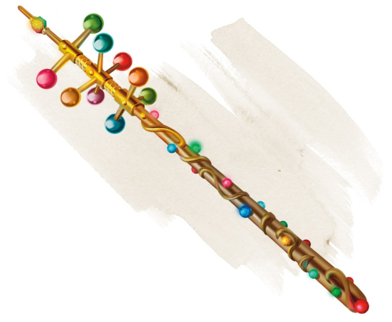

Baguette des merveilles
[ Wand of Wonder ]
Baguette, rare (nécessite un lien avec un lanceur de sorts)
Cette baguette possède 7 charges. Tant que vous la portez, vous pouvez utiliser une action pour dépenser 1 de ses charges et choisir une cible se trouvant à 36 mètres de vous. La cible peut être une créature, un objet, ou un point dans l'espace. Lancez un d100 et consultez la table qui suit pour découvrir ce qui survient.
Si l'effet produit vous fait lancer un sort depuis la baguette, le DD du jet de sauvegarde du sort est de 15. Si le sort possède normalement une portée exprimée en mètres, sa portée passe à 36 mètres si ce n'est pas déjà le cas.
Si un effet couvre une zone, vous devez centrer le sort sur la cible et l'inclure dans la zone d'effet. Si un effet est à cibles multiples, le MD détermine aléatoirement quelles sont celles qui sont affectées.
La baguette récupère 1d6 + 1 charges dépensées chaque jour à l'aube. Si vous dépensez la dernière charge de la baguette, lancez 1d20. Sur un résultat de 1, la baguette tombe en poussière et est détruite.
Si l'effet produit vous fait lancer un sort depuis la baguette, le DD du jet de sauvegarde du sort est de 15. Si le sort possède normalement une portée exprimée en mètres, sa portée passe à 36 mètres si ce n'est pas déjà le cas.
Si un effet couvre une zone, vous devez centrer le sort sur la cible et l'inclure dans la zone d'effet. Si un effet est à cibles multiples, le MD détermine aléatoirement quelles sont celles qui sont affectées.
La baguette récupère 1d6 + 1 charges dépensées chaque jour à l'aube. Si vous dépensez la dernière charge de la baguette, lancez 1d20. Sur un résultat de 1, la baguette tombe en poussière et est détruite.
| d100 | Effet |
|---|---|
| 01-05 | Vous lancez le sort lenteur. |
| 06-10 | Vous lancez le sort lueurs féeriques. |
| 11-15 | Vous êtes étourdi jusqu'au début de votre prochain tour, persuadé que quelque chose d'incroyable vient tout juste de se produire. |
| 16-20 | Vous lancez le sort bourrasque. |
| 21-25 | Vous lancez le sort détection des pensées sur la cible que vous avez choisie. Si vous n'avez pas ciblé de créature, vous subissez à la place 1d6 dégâts psychiques. |
| 26-30 | Vous lancez le sort nuage nauséabond. |
| 31-33 | Une pluie battante tombe dans un rayon de 18 mètres centré sur la cible. La zone devient légèrement obscurcie. La pluie tombe jusqu'au début de votre prochain tour. |
| 34-36 | Un animal apparaît dans l'espace inoccupé le plus proche de la cible. L'animal n'est pas sous votre contrôle et agit comme il devrait le faire normalement. Lancez 1d100 pour déterminer quel animal apparaît. Sur un résultat de 01-25, un rhinocéros apparaît ; sur un résultat de 26-50, un éléphant apparaît ; sur un résultat de 51-100, un rat apparaît. |
| 37-46 | Vous lancez le sort éclair. |
| 47-49 | Un nuage de 600 énormes papillons remplit une zone de 9 mètres de rayon centré sur la cible. La zone devient fortement obscurcie. Les papillons restent en place pendant 10 minutes.
|
| 50-53 | Vous augmentez la taille de la cible de la même manière que si vous aviez lancé le sort agrandissement/rapetissement. Si la cible ne peut pas être affectée par ce sort, ou si vous n'avez pas ciblé de créature, vous devenez la cible de ce sort. |
| 54-58 | Vous lancez le sort ténèbres. |
| 59-62 | De l'herbe pousse sur le sol dans un rayon de 18 mètres centré sur la cible. Si de l'herbe se trouve déjà dans la zone, elle pousse jusqu'à atteindre 10 fois sa taille normale et reste ainsi surdéveloppée pendant 1 minute. |
| 63-65 | Un objet du choix du MD disparaît dans le plan éthéré. L'objet ne doit ni être porté ni être transporté, se trouver dans un rayon de 36 mètres autour de la cible, et ne pas être plus large qu'un cube de 3 mètres d'arête. |
| 66-69 | Vous êtes rétréci comme si vous aviez lancé sur vous le sort agrandissement/rapetissement. |
| 70-79 | Vous lancez le sort boule de feu. |
| 80-84 | Vous lancez le sort invisibilité sur vous-même. |
| 85-87 | Des feuilles se mettent à pousser sur la cible. Si vous avez choisi un point de l'espace comme cible, les feuilles apparaissent sur la créature la plus proche de ce point. À moins qu'elles ne soient enlevées, les feuilles brunissent et tombent d'elles-mêmes au bout de 24 heures. |
| 88-90 | Un chapelet de 1d4 x 10 gemmes, chacune valant 1 po, jaillit de l'extrémité de la baguette en une ligne de 9 mètres de long et de 1,50 mètre de large. Chaque gemme infligeant 1 dégât contondant, et le total des dégâts infligés par les gemmes est divisé équitablement entre toutes les créatures présentes sur la ligne. |
| 91-95 | Une explosion de chatoyantes lumières colorées émane de vous sur un rayon de 9 mètres. Vous, et chacune des créatures présentent dans la zone et capables de voir, devez réussir un jet de sauvegarde de Constitution DD 15 sous peine d'être aveuglé pendant 1 minute. Une créature peut retenter son jet de sauvegarde à la fin de chacun de ses tours, mettant un terme à l'effet qui l'affecte en cas de réussite. |
| 96-97 | La teinte de la cible vire au bleu brillant pendant 1d10 jours. Si vous choisissez un point de l'espace, la créature la plus proche de ce point est affectée. |
| 98-00 | Si vous avez ciblé une créature, elle doit effectuer un jet de sauvegarde de Constitution DD 15. Si vous n'avez pas ciblé une créature, vous devenez la cible et devez effectuer le jet de sauvegarde. Si le jet de sauvegarde échoue de 5 ou plus, la cible est instantanément pétrifiée. Sur tout autre échec au jet de sauvegarde, la cible est entravée et commence à se changer en pierre. Tant qu'elle est entravée de la sorte, la cible doit répéter le jet de sauvegarde à la fin de son prochain tour, devenant pétrifiée en cas d'échec ou mettant un terme à l'effet en cas de réussite. La pétrification perdure jusqu'à ce que la cible soit libérée par un sort de restauration supérieure ou une magie similaire. |
Dungeon Master´s Guide (SRD)
